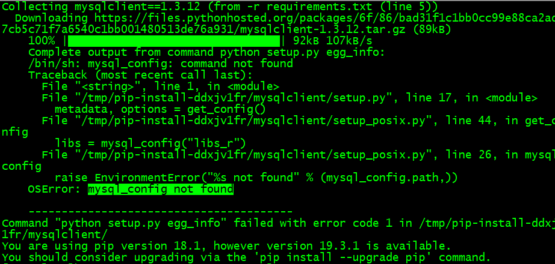

原文连接:https://www.cnblogs.com/wintest/p/12078867.html
前言
之前在学习HttpRunner时，我们都是把用例写在 YAML/JSON 中进行维护，使用起来也很方便。其实，现在有不少大佬都喜欢开发自动化测试平台，比如我们今天要搭建的HttpRunnerManager，这就是已开发好的基于HttpRunner开发的接口自动化测试平台。
虽然现在HttpRunnerManager的作者已经停止维护该平台了，但我们仍可以通过搭建HttpRunnerManager来进一步学习，在平台搭建完成后，我们可在平台上直接编写接口自动化测试用例。
需要在Linux上提前准备的环境（下面是本人搭建时的环境）：
1，Python 3.6.8 （可参考文章：Linux下安装Python3）
2，MySQL 5.7（可参考文章：Linux下安装MySQL 5.7 ）
下载HttpRunnerManager源码
首先，我们直接到 Github 上下载 HttpRunnerManager ，把它下载到本地，或者通过 git 上直接 clone 。在这里，我是先直接下载压缩包。
下载完成，解压后传到Linux服务器上，或者先传到Linux再通过 unzip 命令解压，最后，我们得到如下内容：
安装 requirements.txt 里的依赖包
因为已经在Linux下安装了python3和pip3，因此这里直接通过 pip3 来安装即可。
安装命令：pip3 install -r requirements.txt
输入命令安装后，等待安装完成。我在安装时遇到了如下错误：

上面的报错是在安装 mysqlclient 时报错，在网上查了下，发现原因是Linux系统在装mysql相关的包时要先装依赖包 mysql-devel，因此我们需要先安装 mysql-devel ，命令如下：
yum install mysql-devel
安装之后，再重新安装 requirements.txt 里的依赖包，就不会报错了。
MySQL上创建HttpRunner数据库
接下来，我们需要在MySQL上创建相应HttpRunner数据库，设置好相应用户名、密码，并启动MySQL。下面是我在 Windows 下通过 Navicat 连接MySQL后创建的数据库，名称为 hrun。
创建完成，就可以不用管它了，后面会进行同步数据库，进而得到数据表结构。
修改配置文件
修改 HttpRunnerManager/settings.py 配置文件里DATABASES字典，需要修改的地方（大约在settings.py中第120行左右）：

我们本次只修改数据库配置相关的内容，可以通过 vim 命令进行修改，修改之后如下（根据自己实际情况修改）：
同步数据库
上面，我们只是创建了一个名称为 hrun 的数据库，但这个数据库下没有任何数据表，现在，我们将同步数据库得到数据表。需要先返回到 HttpRunnerManager 的根目录，在我们这里也就是 HttpRunnerManager-master 目录下。
生成数据迁移脚本：python3 manage.py makemigrations ApiManager
应用到db生成数据表：python3 manage.py migrate
同步数据库完成之后，我们再到 MySQL 中查看，可以发现 hrun 数据库下新增了很多数据表。
创建后台管理员用户
到这里，我们基本的搭建工作已差不多完成。现在，我们创建一个超级用户，并按提示输入相应用户名，密码，邮箱。该用户可用于管理后台数据。
创建后台用户：python3 manage.py createsuperuser
启动Django服务
我们还需要启动Django服务，Django默认端口一般是8000，启动服务的命令如下：
python3 manage.py runserver 0.0.0.0:8000
使用上面的命令，有一个不足的地方，那就是不能在后台运行，因此我们最好通过后台运行的方式来启动Django服务，命令如下：
nohup python3 manage.py runserver 0.0.0.0:8000 >hrun.log 2>&1 &
HttpRunnerManager在后台运行的日志，将输出到 hrun.log 下。
登录HttpRunnerManager
在Linux下启动服务之后，我们将在Windows下进行访问并登录HttpRunnerManager，我们需要检查一下 8000 等端口是否已开放，特别如果是在云服务器上搭建的环境，需要添加安全组规则，否则可能访问不到。
后台管理：http://ip地址:8000/admin/
注册界面：http://ip地址:8000/api/register/
后台运维管理登录界面如下：
输入上一步骤创建的后台用户即可进行后台登录，登录后的界面如下：
HttpRunnerManager用户注册界面如下：
创建普通用户之后，切换到登录界面，如下：
用户登录成功后的主界面：
注意：在上面的主界面中，我们发现界面的样式似乎有些不对劲，这是因为我们从Github上下载的源码有些问题，这里就需要手动修改一下了。
上面 templates/base.html 文件中第23行，需要修改一下，将 http://cdn.amazeui.org/amazeui/2.7.2/css/amazeui.min.css 替换为 http://cdn.bootcss.com/amazeui/2.7.2/css/amazeui.min.css ，替换之后，再次刷新页面，界面样式就正常了，最后显示的界面效果如下：
HttpRunnerManager中，异步执行、定时任务、任务监控等功能，需要搭建RabbitMQ消息中间件等，这些我们在后续再进一步学习吧。
OK，现在我们的HttpRunnerManager接口测试平台已经基本搭建成功了，除了异步执行、定时任务、任务监控等之外，其他的功能都可以使用了。